Introduction to WebGestalt and ORA
## [1] "/home/workshop/damki/workshop-intro-functional-analysis/source"Objectives
- 1
- 2
- 3
…
WebGestalt Overview
We’ve discussed some of the motivations for performing functional enrichment analysis, but what tools can we use to perform these kinds of analyses?
One option is WebGestalt (WEB-based GEne SeT AnaLysis Toolkit) which has a web-based interface for running functional enrichment analysis. It supports a wide range of organisms and offers several methods for enrichment analysis.
Overrepresentation results for bulk RNA-seq data using WebGestalt
Let’s look through an example of ORA (Over Representation Analysis) report from WebGestalt, similar to what might be shared by a collaborator. These results were generated for our bulk RNA-seq data, which compared gene expression between wild-type mice fed a iron deficient vs control diet.
We’ll go through the steps for how to run ORA using the browser version together shortly but let’s first look through what WebGestalt reports and what results we can expect.
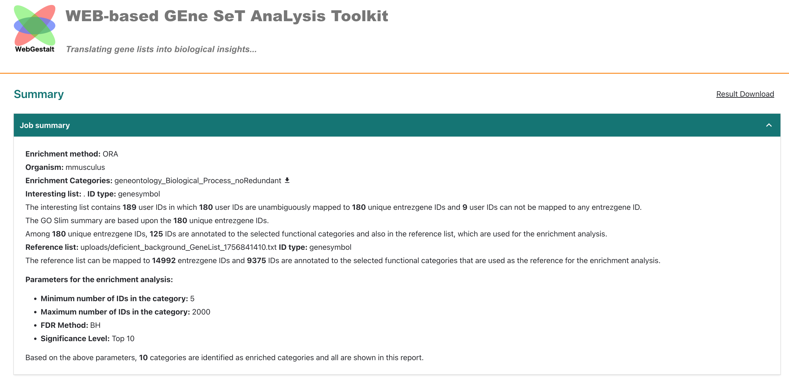
At the top of the report, WebGestalt summarizes what was submitted. The
bulk RNA-seq had 189 DE genes in total but only 180 genes mapped to gene
symbols of the tool’s reference (entrezgene) and then only
125 genes were annotated to the functional categories selected for this
analysis, which was
geneontology_Biological_Process_noRedundant.
We can also see that the reference list was user provided
(upload/deficient_background_GeneList_XXXXXX.txt) and that
14992 and 9375 were mapped to entrezgene gene symbols and functional
catagories, respectively.
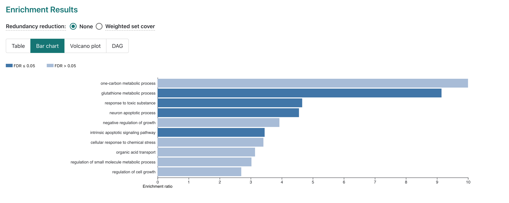
Next, we can see the top 10 enriched GO-terms for our submitted DE genes
from the non-redundant Biological Process GO-term set. While 10 terms
are reported, only 4 are significant after FDR multiple hypothesis
correction.
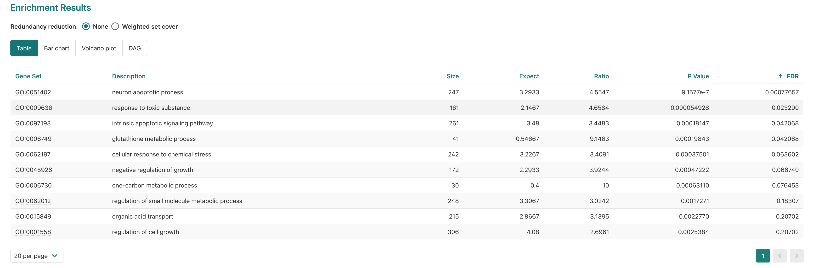
Next, we can see the top 10 enriched GO-terms for our submitted DE genes from the non-redundant Biological Process GO-term set. While 10 terms are reported, only 4 are significant after FDR multiple hypothesis correction.
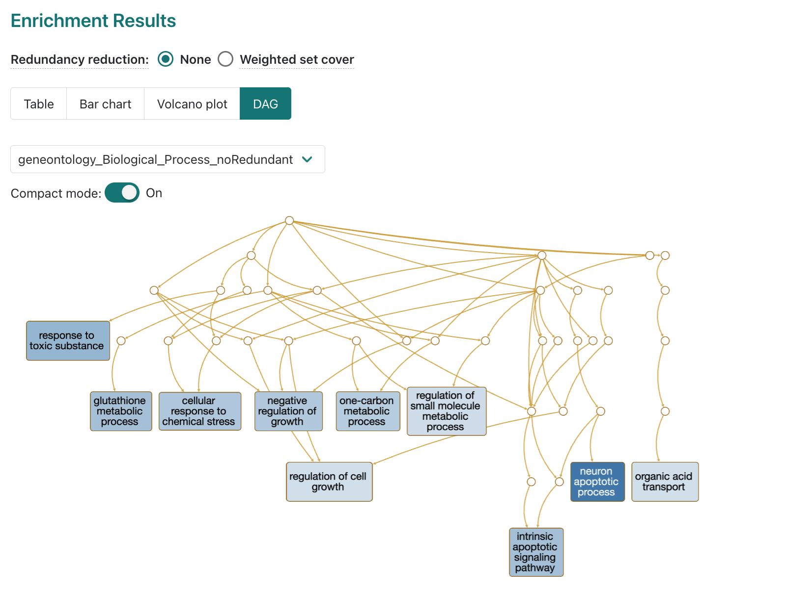
If we look at the DAG map of GO terms included in the report, we can
see that some of the significant terms are related, like
intrinsic apoptotic signaling pathway and
neuron apoptotic process. This can be useful for
interpreting why a GO term that’s unlikely to be applicable to the
experiment (e.g. neuronal process from non-brain tissue) might be coming
up as enriched.
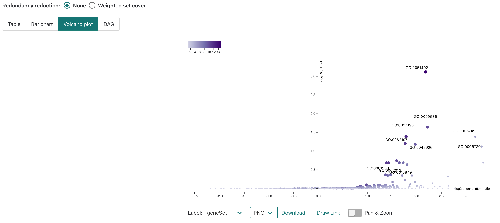
Individual GO-term examples
Next let’s look at some of the significantly enriched terms.
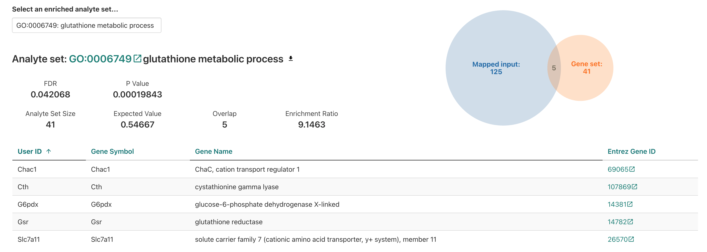
Starting with glutathione metabolic process we see …
Based on the experimental design, is finding a enrichment for a metabolic process surprising? Is it surprising to find that this specific process is enriched?
Let’s look at some of our other enriched results.
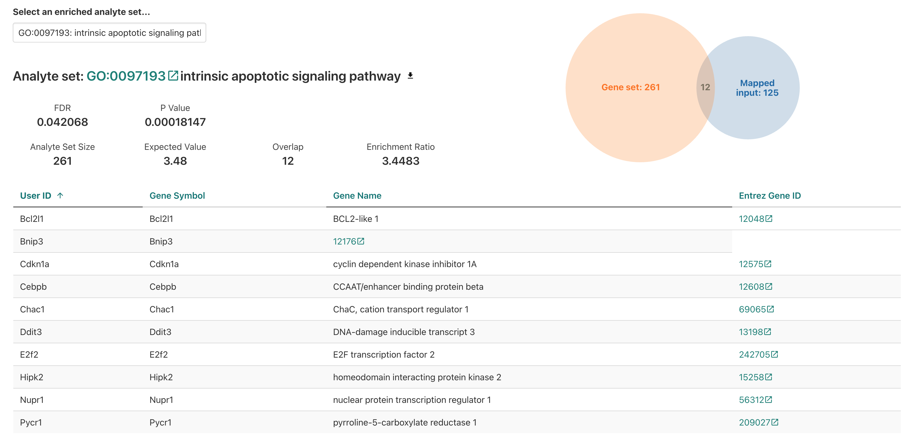
For the intristic apoptotic signaling pathway, we see …
For the neuron apoptotic process, would we expect to see similar or difference genes represented for that GO term annotation>?
Next, let’s go back to look at the WebGestalt interface and familiarize ourselves with the submission process and documentation.
WebGestalt interface
If we look at the WebGestalt homepage, we can see that it has several sections:
- At the top, we have the main navigation menu, which includes links including to the Manual, Citation, a User Forum, and a link to the 2019 version of the tool.
- Then, the main section is the “Basic parameters” box, which allows us to select the organism, analysis type, and database.

Within the basic parameters box, there is a smaller box that looks like its for specifying the input data, which we’ll circle back to shortly.
Below that, there is a area labeled “Advanced parameters”, which we’ll skip for now, but that includes options for adjusting the analysis parameters, such as the statistical method and multiple testing correction.
WebGestalt documentation

A good practice when using a new tool is to read the documentation provided by the developers, which we can find by selecting Manual from the top of WebGestalt site.
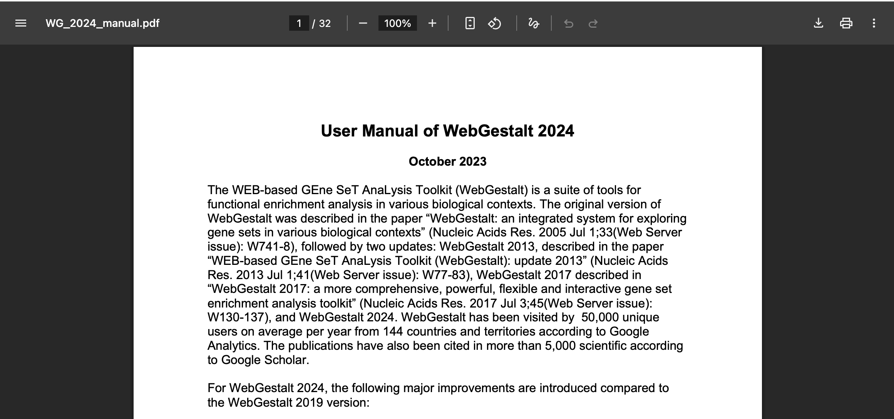
At the top of the manual page, we can see an overview of some of the related publications as well as a comparison between an older 2019 version and the current 2024 version.

If we scroll down, then we can see a bit of an introduction to the tool. However, the manual seems to already have some terminology and assumptions about a user’s familiarity with functional enrichment so let’s go back to the tool site and focus on a more limited set of options for our first pass.
WebGestalt analysis demonstration
Let’s start with some of the basic parameters and delve into the options we want to start with.
Input data
Bulk RNA-seq results from our RNA-seq
demystified workshop - statistics from comparision between deficient
vs control mice using DESeq2 (file =
DE_results_deficient_vs_control_annotated.csv)
Hands-on: Review input data and prepare for analysis
To start, we’ll load the input data and review it. The data is in CSV
format, so we can use read_csv() from the
tidyverse library to load it into R.
# Load necessary libraries
library(tidyverse)
# Check working directory
getwd()[1] "/home/workshop/damki/workshop-intro-functional-analysis/source"# Load the bulk RNA-seq results
deficient.v.control_bulkDE <- read_csv("../data/de_deficient_vs_control_annotated.csv") #TO REVISE - path may need to be adjusted
# Check the first few rows of the data
head(deficient.v.control_bulkDE)# A tibble: 6 × 9
id symbol baseMean log2FoldChange lfcSE stat pvalue padj call
<chr> <chr> <dbl> <dbl> <dbl> <dbl> <dbl> <dbl> <chr>
1 ENSMUSG00000000001 Gnai3 1490. 0.278 0.148 1.88 0.0605 0.325 NS
2 ENSMUSG00000000028 Cdc45 1749. 0.222 0.129 1.72 0.0853 0.386 NS
3 ENSMUSG00000000031 H19 2152. 0.136 0.284 0.478 0.633 0.867 NS
4 ENSMUSG00000000037 Scml2 24.9 0.600 0.562 1.07 0.286 NA NS
5 ENSMUSG00000000049 Apoh 7.78 -1.23 1.15 -1.07 0.285 NA NS
6 ENSMUSG00000000056 Narf 19654. -0.201 0.167 -1.20 0.229 0.596 NS In the table above, we have the following columns:
id: The ENSEMBL gene identifier.symbol: The gene symbol.baseMean: The average expression of the gene across all samples.log2FoldChange: The log2 fold change in expression between the deficient and control samples.lfcSE: The standard error of the log2 fold change.stat: The test statistic for the differential expression test.pvalue: The p-value for the differential expression test.
A key attribute of this table is that includes statistics for all genes included in the comparison, not just those that are differentially expressed. This allows us to use functional enrichment tools that use both a “positive” set of DE genes and a “background” set of all genes measured in the experiment, like ORA.
Next, we’ll prepare the data for analysis by creating a list of DE
genes and a background set of all genes. We’ll use the
log2FoldChange and pvalue columns to identify
DE genes, and we’ll use the gene column as our gene
identifiers.
# Generate positive set (DE gene symbols)
deficient_DE_only <- deficient.v.control_bulkDE %>%
filter(padj < 0.05 & abs(log2FoldChange) > log2(1.5))
deficient_DE_GeneList <- deficient_DE_only %>% pull(symbol) %>% na.omit()
head(deficient_DE_only)# A tibble: 6 × 9
id symbol baseMean log2FoldChange lfcSE stat pvalue padj call
<chr> <chr> <dbl> <dbl> <dbl> <dbl> <dbl> <dbl> <chr>
1 ENSMUSG00000000275 Trim25 1662. -0.674 0.200 -3.38 0.000734 0.0312 Down
2 ENSMUSG00000000861 Bcl11a 1679. 0.685 0.210 3.27 0.00109 0.0398 Up
3 ENSMUSG00000001281 Itgb7 532. 1.15 0.242 4.75 0.00000203 0.000554 Up
4 ENSMUSG00000002109 Ddb2 125. 1.06 0.300 3.54 0.000398 0.0207 Up
5 ENSMUSG00000002985 Apoe 157. -1.16 0.345 -3.35 0.000814 0.0329 Down
6 ENSMUSG00000003865 Gys1 89.3 2.26 0.627 3.61 0.000310 0.0180 Up head(deficient_DE_GeneList)[1] "Trim25" "Bcl11a" "Itgb7" "Ddb2" "Apoe" "Gys1" # Repeat to generate background set (all gene names)
deficient_background_GeneList <- deficient.v.control_bulkDE %>% pull(symbol) %>% na.omit()# write out to file (text only?)
write(deficient_DE_GeneList, file ="../data/deficient_DE_GeneList.txt", ncolumns = 1)
write(deficient_background_GeneList, file ="../data/deficient_background_GeneList.txt", ncolumns = 1)These outputs then allow us to submit data via the web browser version of WebGestalt.
Running WebGestalt with our bulk RNA-seq results
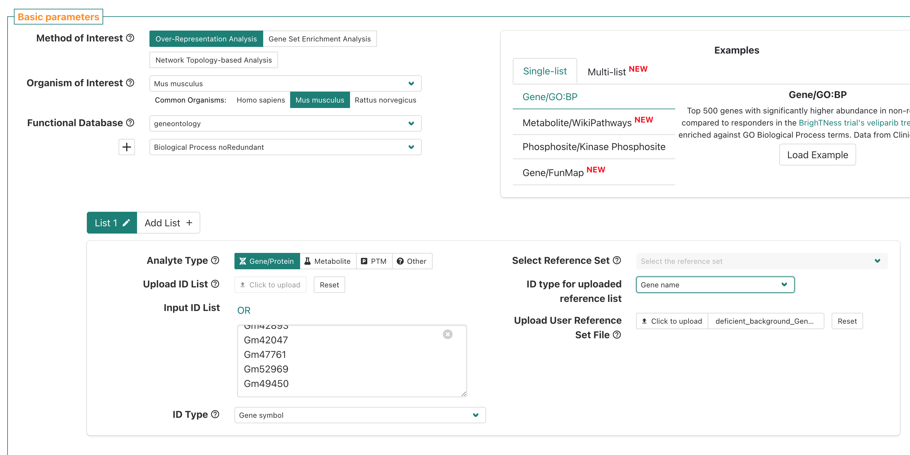
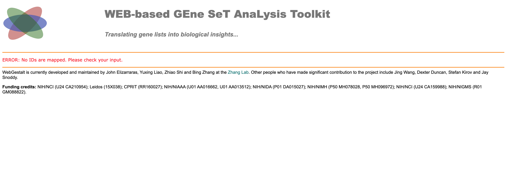
We ran into an error - why? Let’s go back to the submission page and see if we can find the issue.
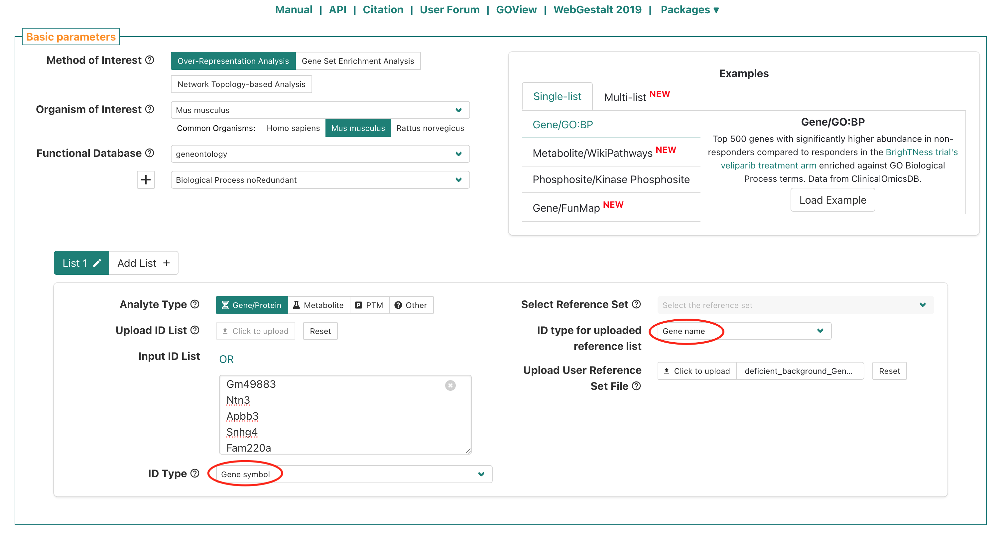
If we look at the submission page, the
ID type for uploaded reference list is “Gene name”, which
doesn’t match the ID type we used for our gene list, which was “Gene
symbol”. Let’s change the
ID type for uploaded reference list to “Gene symbol” and
re-submit.